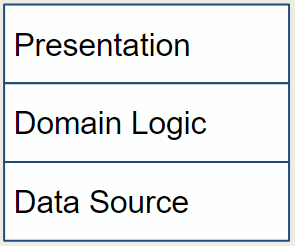
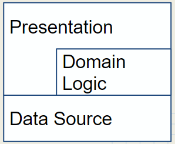

Large scale architectures
Now
stuff gets really big or
Design patterns on steroids
What is a design pattern?
Remember the definition . . .
This semester is the study of design pattens for really big systems
Enterprise applications
- Persistent data - for years
- Lots of data
- Many concurrent users
- Lots of user interface screens
- Integrate with other systems
- Examples
Life within a business
Conceptual dissonance - between business processes and the software
Business processes differ across the Organization and over time
Business logic is often not logical and is out of our control
Kind of enterprise applications
B2C
B2B
Single business information systems
Are enterprise applications limited to “business” systems?
Does performance matter?
Sometimes
Some strategies can help, but nothing is real until it is measured on
your system
Upgrading anything can change performance (up or down) and old
optimizations may become degradations
Performance definitions
- Response time - the time it takes the system to process a
request
- Responsiveness - the time it takes the system to respond to
a request
- Latency - the minimum time required to get a response even
if no work is required
- Throughput - the amount of work that can be done in a given
amount of time
- Load - how much stress the system is under
- Load sensitivity - how response time varies with load
- Efficiency - performance divided by resources
- Capacity - maximum effective throughput or load
Scalability
How adding resources affects performance
Vertical scalability - adding power to a single server
Horizontal scalability - adding more servers
How will this book describe a pattern?
- Name - so we can build a common vocabulary
- Intent - summary statement
- Sketch - an example diagram (usually UML)
- Motivating Problem for the pattern
- How it Works
- When to Use It
- Further Reading
- Examples (READ THESE!!!!)
How Is This Different From SWE200 Design Patterns?
- Patterns are more complex
- Selection of patterns depends on physical architecture of
the system
- Selection of a pattern in one portion of the system affects
the choice of patterns elsewhere
- pattern choices are interconnected
- One pattern often includes other patterns
Example of Interconnections
web.cs.ship.edu/~merlin/lsa
username: lsa
password: merlin
- Each of his narratives has a page
- Diagram of related patterns
- red: know it WELL
- blue: know its intent
- Can search for a pattern to see all of the places it is
referenced
Layering
The largest chunks of the system
Layered Architectures
- Like a layered cake
- Each layer rests on a lower layer and uses services provided by that lower layer
- Lower layers are unaware of the layers above them
- Each layer can only see the layer immediately below it (so the layers below that are hidden from it)
Benefits of Layering
- You can understand each layer in isolation
- You can make substitutions for layers without changing anything else in the system
- You minimize dependencies between layers
- Layers make good places for standardization (which makes people be able to develop competing solutions)
- One lower layer can support a wide variety of higher-level solutions
Downsides to Layering
- While layers encapsulate some things well, some changes will ripple down the system
- Extra layers can affect performance
Enterprise Systems have Three Main Layers
Classic layers:

Sometimes the Presentation layer is given read only access to the data source:

Presentation Layer
- Handles interactions between the user and the software
- aka: User Interface
- Rich client - rich UI not in a browser
- Primary Responsibilities:
- Display information to the user
- Convert request from the user into actions upon the Domain
Kinds of Presentaion
One system can have multiple presentation layers
- Rich client
- Web interface
- Command line controller
- Programmatic controller (no human user at all)
Domain Logic Layer
- aka: Business Logic
- calculations,
- validation of data from presentation,
- system behavior
Data Source
Communication with other systems that carry out tasks for the application
- transaction monitors
- other applications
- messaging systems
- persistent data
Alternative View of System
Everything outside of the system is an interface

Hexagonal Architecture*
The
interface presented by the Domain Logic layer can be used by any
outside entity with the construction of an appropriate adapter.
*Alistar
Cockburn, Web page titled, “The Pattern: Ports and Adapters (‘’Object
Structural’’)“, http://alistair.cockburn.us/Hexagonal+architecture,
accesses 7/15/2014.
Symmetry
- Thinking of the system using Hexagonal Architecture has a nice symmetry- all things outside the system are equivalent
- However,
the user interface that you provide seems different than an interface
to another system (a service you provide to something else)
- This
asymmetry is even more clear when you think about the data source - it
is essentially a system that is providing a service to you, so you
would be one of the things requiring an adapter in its hexagonal
architecture.
Layers in Code
- Very simple: one procedure - but keep the three layers as separate subroutines
- More complex: each layer is a class
- Even more complex: each layer is a package (or two or three!)
Layering Rules
- Domain Layer and Data Source should never depend on Presentation
- That supports having multiple presentations without changing the lower layers
- What is Domain Logic as opposed to other types of logic?
- Doesn’t change if you change the presentation layer
- Doesn’t change if you change how the data is sourced (XML vs. DB)
Where do the Layers Run?
Choices
- Server
- Desktop
- Thin client or browser
- Phone
Things to weigh
- Responsiveness
- Server Roundtrips
- Disconnected Operation
- Sharing/Synchronizing of Information
Placement by Layer
Data Source
- Almost always on a server (remember: enterprise systems)
- When disconnected, can substitute a temporary local data source
Presentation
- Driven by the type of UI you want
- Rich client on the client
- Web interface on the server
Domain Logic
- Either on the client or the server
- Splitting it between the two is complicated
Complexity Boosters
Want to avoid
- distribution
- explicit multi-threading
- paradigm chasms (OO vs. RDMS vs. scripting)
- multiplatform development
- extreme performance requirements
because each comes at a high cost to the complexity of the system and therefore development and maintenance times